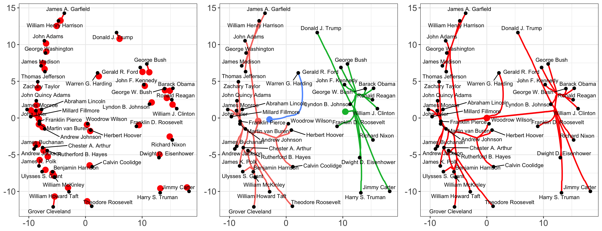
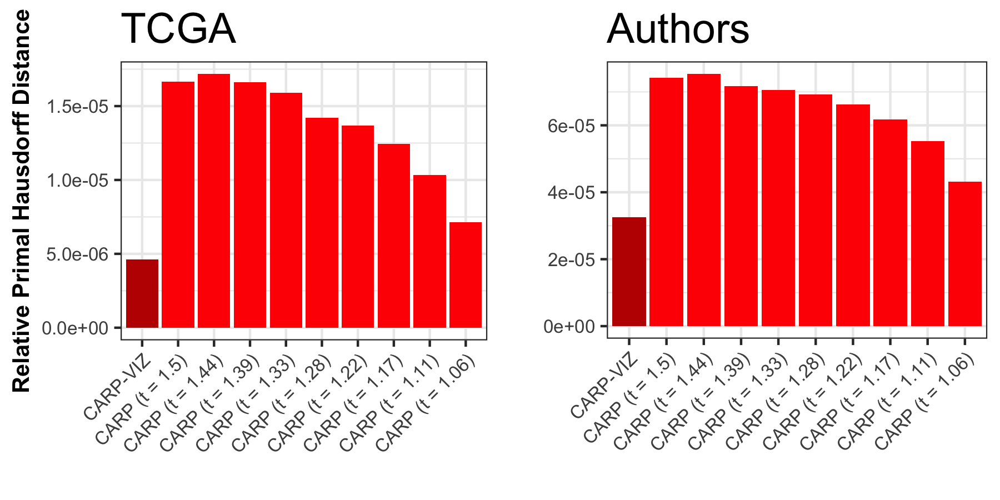
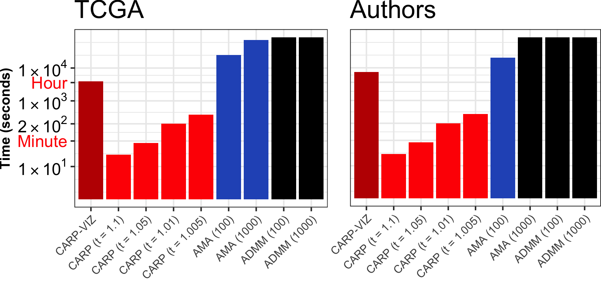

Dynamic Visualization and Fast Computation for Convex Clustering via Algorithmic Regularization
Winner of the ASA Section on Statistical Learning and Data Science (SLDS) 2019 Student Paper Competition
Abstract: Convex clustering is a promising new approach to the classical problem of clustering, combining strong performance in empirical studies with rigorous theoretical foundations. Despite these advantages, convex clustering has not been widely adopted, due to its computationally intensive nature and its lack of compelling visualizations. To address these impediments, we introduce Algorithmic Regularization, an innovative technique for obtaining high-quality estimates of regularization paths using an iterative one-step approximation scheme. We justify our approach with a novel theoretical result, guaranteeing global convergence of the approximate path to the exact solution under easily-checked non-data-dependent assumptions. The application of algorithmic regularization to convex clustering yields the Convex Clustering via Algorithmic Regularization Paths (CARP) algorithm for computing the clustering solution path. On example data sets from genomics and text analysis, CARP delivers over a 100-fold speed-up over existing methods, while attaining a finer approximation grid than standard methods. Furthermore, CARP enables improved visualization of clustering solutions: the fine solution grid returned by CARP can be used to construct a convex clustering-based dendrogram, as well as forming the basis of a dynamic path-wise visualization based on modern web technologies. Our methods are implemented in the open-source R package clustRviz, available at https://github.com/DataSlingers/clustRviz.
Publisher DOI: 10.1080/10618600.2019.1629943
PubMed: 32982130
Working Copy: ArXiv 1901.01477
Summary: In this paper, we look at efficient algorithms for the convex clustering problem: [{} = { ^{n p}} | - |F^2 + ({1 i < j n} w_{ij} |{i} - {j}|_q)] Chi and Lange (JCGS, 2015) showed that the ADMM can solve this problem efficiently for fixed \(\lambda\), but how should we think about this problem for multiple values of \(\lambda\)? This is a more acute problem than in, e.g., sparse regression, because we need a large set of \(\lambda\) values to construct a dendrogram representation of our data and the correct values of \(\lambda\) are not known a priori. To make convex clustering practical, we need an algorithm to solve for a very fine grid of \(\lambda\) values quickly: thankfully, we do not actually need highly accurate solutions as we are more interested in which points get clustered than in the (biased) cluster centroid estimates.

To solve this problem, we propose a new form of extreme warm-start early-stopping that we call algorithmic regularization. By only increasing \(\lambda\) by a small amount (to obtain a fine grid), warm-start techniques are sufficient to ensure that a single ADMM step gets a “good enough” solution. We term this approach CARP - Clustering via Algorithmic Regularization Paths
- Input:
- Data matrix: \(X \in \mathbb{R}^{n \times p}\)
- Weighted edge set: \(\mathcal{E} = \{(e_l, w_l)\}\)
- Relaxation parameter: \(\rho \in \mathbb{R}_{> 0}\)
- Precompute:
- Difference matrix \(D \in \mathbb{R}^{|\mathcal{E}| \times n}\)
- Cholesky factor \(L = \textsf{chol}(I + \rho D^TD) \in \mathbb{R}^{n \times n}\)
- Initialize:
- \(U^{(0)} = X\), \(V^{(0)} = DX\), \(Z^{(0)} = V^{(0)}\), \(\gamma^{(1)} = \epsilon\), \(k = 1\)
- Repeat until \(\|V^{(k - 1)}\| = 0\):
- \(U^{(k)} = L^{-T}L^{-1}\left[X + \rho D^T(V^{(k - 1)} - Z^{(k - 1)})\right]\)
- If \(q = 1\), for all \((i, j)\): [V_{ij}^{(k)} = {w_i ^{(k)}/ }((DU^{(k)} + Z^{(k - 1)}){ij})]
- If \(q = 2\), for all \(l\): [V{(k)}{l} = (1 - )+(DU{(k)} + Z^{(k - 1)})_{l}]
- \(Z^{(k)} = Z^{(k - 1)} + DU^{(k)} - V^{(k)}\)
- \(\gamma^{(k + 1)} = t \gamma^{(k)}\)
- \(k := k + 1\)
- Return \(\{(U^{(l)}, V^{(l)}\}_{l = 0}^{k - 1}\)
We rigorously justify our approach by showing convergence of the CARP path and the true solution set in the Hausdorff metric: \[\begin{align*} d_H(\{\mathbf{U}^{(k)}\}, \{\hat{\mathbf{U}}_{\lambda}\}) \equiv \max\left\{\sup_{\lambda} \inf_k \left\|\mathbf{U}^{(k)} - \hat{\mathbf{U}}_{\lambda}\right\|, \sup_{k} \inf_\lambda \left\|\mathbf{U}^{(k)} - \hat{\mathbf{U}}_{\lambda}\right\|\right\} \xrightarrow{(t, \epsilon) \to (1, 0)} 0\\ d_H(\{\mathbf{Z}^{(k)}\}, \{\hat{\mathbf{Z}}_{\lambda}\}) \equiv \max\left\{\sup_{\lambda} \inf_k \left\|\mathbf{Z}^{(k)} - \hat{\mathbf{Z}}_{\lambda}\right\|, \sup_{k} \inf_\lambda \left\|\mathbf{Z}^{(k)} - \hat{\mathbf{Z}}_{\lambda}\right\|\right\} \xrightarrow{(t, \epsilon) \to (1, 0)} 0 \end{align*}\] This can be summarized as CARP finding “the whole path and nothing but the path.”

Experimentally, we find that only moderately small step sizes are necessary to accurately estimate the dendrogram structure of the data. We extend this approach to Convex Bi-Clustering as well, giving the CBASS algorithm, which is a tortured acronym for Convex Bi-Clustering via Algorithmic Regularization with Small Steps. The version of CBASS in the paper does not guarantee Hausdorff convergence, but the modified version currently in the clustRviz R package does.
Our theoretical analysis uses simple ingredients to show Hausdorff convergence:
- Geometric convergence of the ADMM (here implied by strong convexity, but this can often be relaxed)
- Lipschitz continuity of the solution path
- A compact set of non-trivial \(\lambda\) values
Combining these in a “daisy-chaining” analysis (and several pages of inequalities) gives Hausdorff convergence. We believe this is a viable strategy for a wide range of statistical learning problems for which the “shape” of the solutions is more interesting than obtaining a single high-precision estimate.
We implement these algorithms in our clustRviz R package which is the fastest “whole path” solver available for the convex clustering. Later work has proposed better base algorithms than the ADMM and it would be interesting to use the Algorithmic Regularization strategy to boost these into “whole path” solvers.

Presentations: I was invited to give a talk on my convex clustering work at the Lund University Statistical Learning Seminar, which can be viewed below:
Direct YouTube Link. Slides from a more focused talk on the CARP and CBASS algorithms can be found here.
Related Software: The clustering methodology from this paper is implemented in my R package clustRviz. The algorithmic regularization scheme from this paper was applied to the Generalized ADMM from my paper on co-clustering algorithms to give the improved CBASS algorithm in the package.
Citation:
@ARTICLE{Weylandt:2020,
AUTHOR="Michael Weylandt and John Nagorski and Genevera I. Allen",
TITLE="Dynamic Visualization and Fast Computation for Convex Clustering via Algorithmic Regularization",
JOURNAL="Journal of Computational and Graphical Statistics",
YEAR=2020,
VOLUME=29,
NUMBER=1,
PAGES={87-96},
DOI="10.1080/10618600.2019.1629943",
}